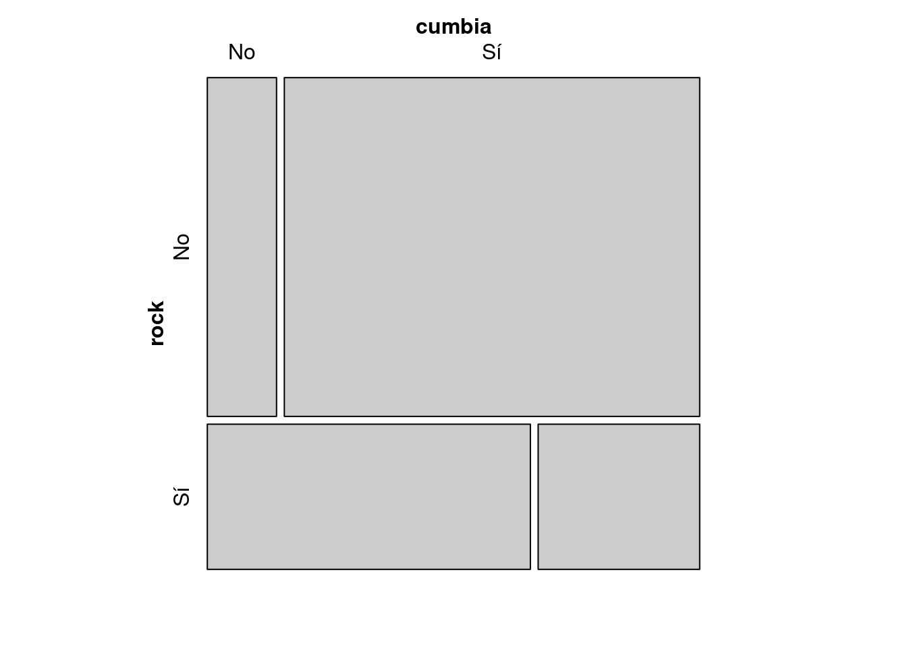
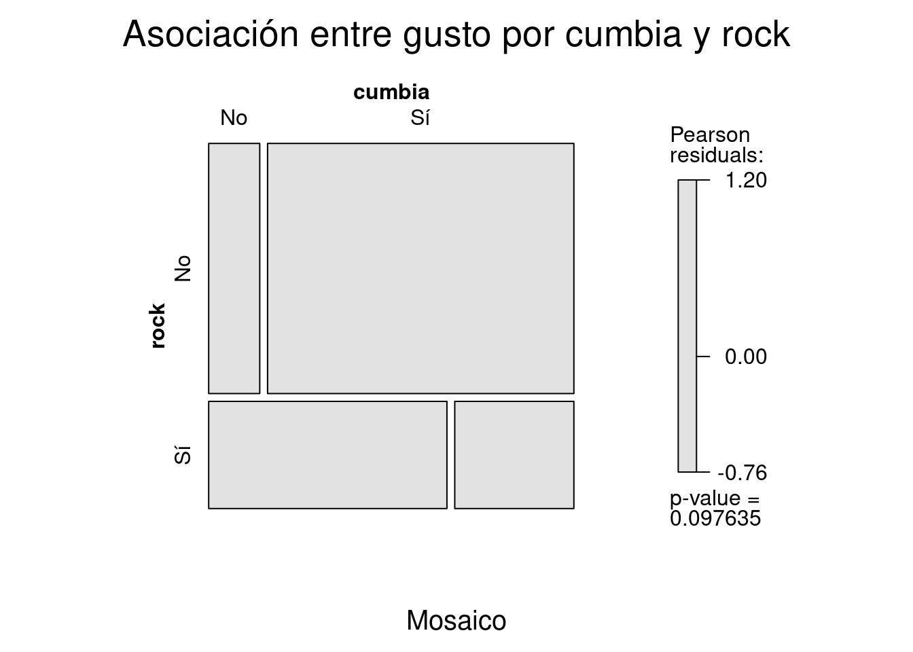
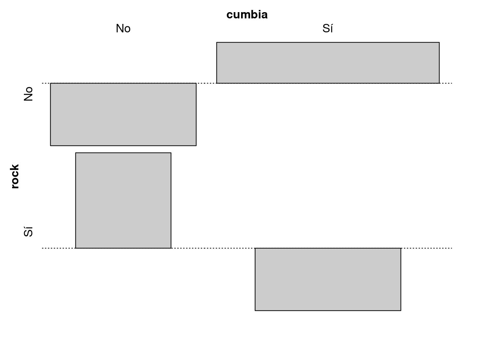
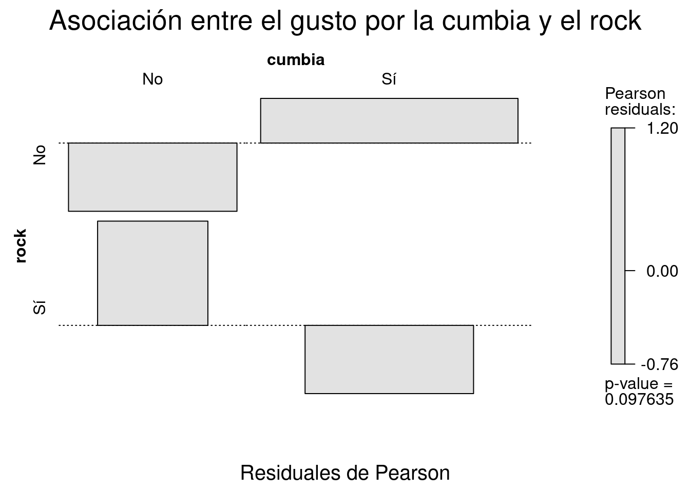
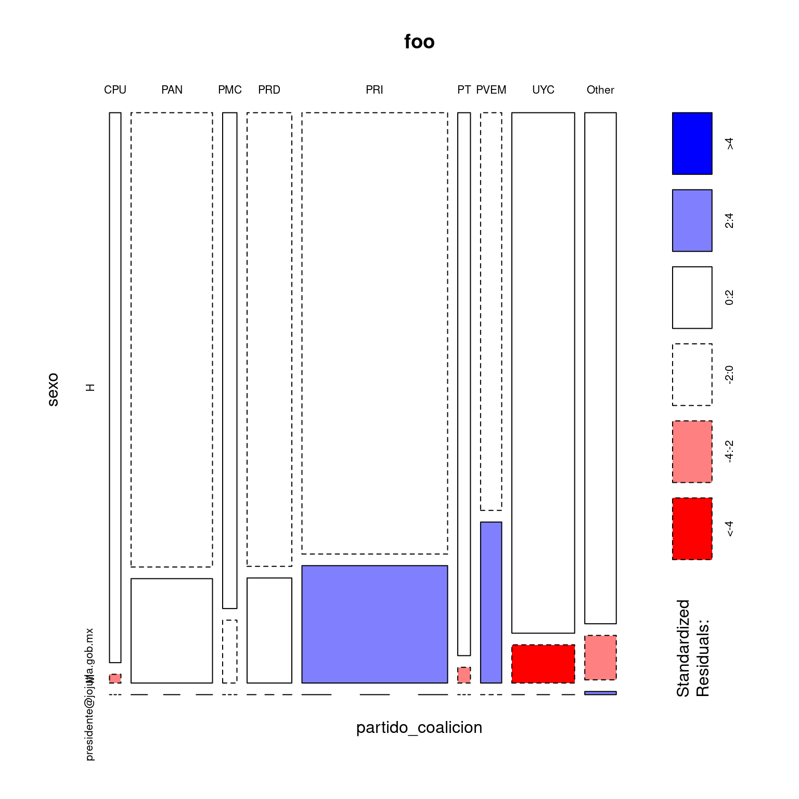
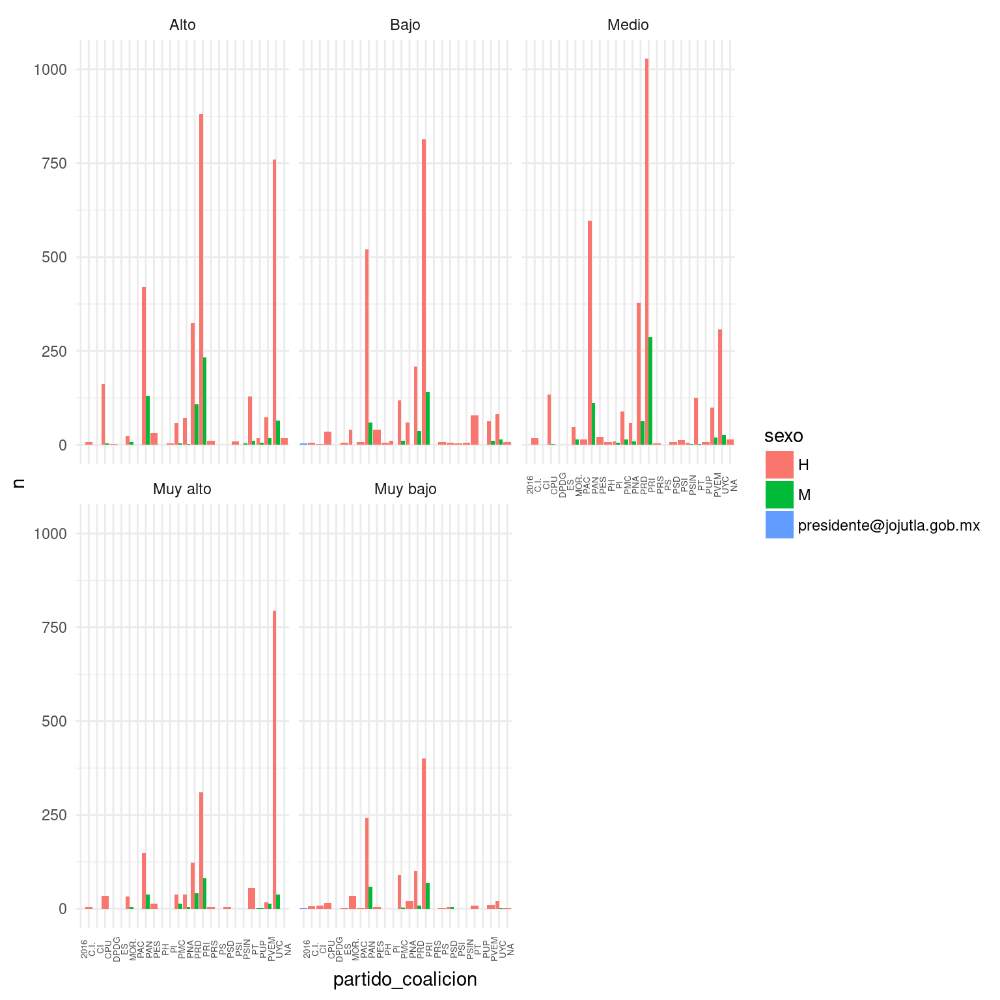

Capítulo 5 Análisis de datos categóricos
5.1 Introducción
Este documento presenta algunos métodos básicos para el análisis de datos categóricos y las funciones de R que nos permiten llevarlos a cabo. Nos concentraremos en la creación de tablas de contingencia, ajuste de modelos de independencia \(\chi\)22 y loglineales y medidas de asociación para variables categóricas nominales, además de algunos métodos gráficos para visualizar datos categóricos. Otros métodos más avanzados serán cubiertos en documentos posteriores, puntualmente los métodos de modelado lineal –modelos logit–, reducción de la dimensionalidad –Análisis de Correspondencias Múltiples– e inferencia de variables latentes –Análisis de Clases de Latentes. Sin embargo su comprensión y aplicación reposan en el conocimiento de los métodos básicos.
5.1.1 Datos categóricos
Entendemos por datos categóricos a aquellos que definen la pertenencia de un objeto estadístico a una categoría o clase de acuerdo a alguno de sus atributos. De acuerdo con el nivel de medición los datos categóricos corresponden a las variables medidas en escalas nominales u ordinales, aunque aquí nos centraremos en las nominales. Una variable nominal asigna pertenencia a una categoría excluyente, es decir, señala una igualdad o diferencia. En términos lógicos la única operación que podemos realizar es a=b o a\(\neq\)b. En el caso de las ordinales existe una magnitud, algunas categorías tienen más y otras tienen menos de algún atributo, por lo que es posible hacer operaciones como a>b o a<b. Sin embargo esa magnitud expresa una distancia desconocida.
| Escala de Medición | Propiedad Sistema Numérico | Operación Matemática | Ejemplos |
|---|---|---|---|
| Nominal | Identidad | Contar Frecuencias | Sexo |
| Ordinal | Magnitud | Ordenar | NSE |
| Intervalo | Distancia | Suma, Resta | Calificaciones del Mora |
| Razón | Cero indica ausencia de valor | Multiplicación, División | Ingreso, Edad |
5.2 Tablas
En su forma directa una variable categórica es un vector de nombres de categorías.
library(tidyverse)
library(knitr)
genero <- data.frame(`Género`=c("F", "M", "LGBT", "M", "M", "F", "F", "F", "M", "M"))
kable(genero, caption="Variable Género") | Género |
|---|
| F |
| M |
| LGBT |
| M |
| M |
| F |
| F |
| F |
| M |
| M |
Sin embargo para tratar a las variables categóricas con generalmente recurrimos a conteos. Esos conteos tienen la forma de y reciben el nombre de tablas. La tabla de conteos de una variable categórica tiene dos filas: una con las categorías de la variable y otra con la frecuencia o cantidad de veces que se observa esa categoría.
| genero | Freq |
|---|---|
| F | 4 |
| LGBT | 1 |
| M | 5 |
Adicionalmente podemos expresar expresar expresar esos mismos datos como proporciones del total.
| genero | Freq |
|---|---|
| F | 0.4 |
| LGBT | 0.1 |
| M | 0.5 |
¿Por qué pudimos expresar a los conteos como proporciones, lo que cuál implica realizar una división, operación matemática imposible para las variables nominales? Porque no realizamos la operación la operación sobre la variable, lo hacemos los conteos de la variable. Nos es posible dividir masculino entre género, pero podemos dividir 5 entre 10.
5.2.1 Tablas de contingencia de dos dimensiones.
Las tablas de una sola variable son útiles para conocer la distribución univariada de una variable categórica, expresada en cantidades o proporciones. Sin embargo el análisis de datos categóricos generalmente implica trabajar con más de una variable. Con más de una variable también podemos trabajar con tablas, a las que llamaremos tablas de contingencia.24 En función de la cantidad de variables que contemos en una tabla de contingencia definiremos el número de dimensiones de la tabla. Así, la Tabla 2 es una tabla de una dimensión. Una tabla de contingencia tiene 2 o más dimensiones. Es importante no confundir el número de categorías de las variables con el número de dimensiones de la tabla.
Para tablas de contingencia bidimensionales visualmente las dimensiones se nos presentan como filas y columnas. En la intersección de cada fila y columna hay una celda que registra el conteo de las observaciones que pertenecen a ambas categorías. En términos de conjuntos, el conteo de objetos en la intersección de A y B. Nótese que la tabla debe incluir todas las intersecciones posibles, dadas por las categorías de la variable, aun cuando no haya observación en ese conjunto de datos en particular. Se les asigna el conteo correspondiente: 0.
edad <- c(20, 32, 19, 42, 56, 19, 32, 20, 56, 56)
cbind(genero, edad) %>%
table() %>%
kable(., caption="Tabla de contingencia para género y edad")| 19 | 20 | 32 | 42 | 56 | |
|---|---|---|---|---|---|
| F | 1 | 2 | 1 | 0 | 0 |
| LGBT | 1 | 0 | 0 | 0 | 0 |
| M | 0 | 0 | 1 | 1 | 3 |
Para tablas de contingencia bidimensionales también es posible expresar los conteos como proporciones, pero en este caso podemos calcular diferentes tipos de proporciones: sobre el total, sobre las filas o sobre las columnas.
edad <- c(20, 32, 19, 42, 56, 19, 32, 20, 56, 56)
cbind(genero, edad) %>%
table() %>%
prop.table(.) %>%
kable(caption = "Proporciones sobre el total")| 19 | 20 | 32 | 42 | 56 | |
|---|---|---|---|---|---|
| F | 0.1 | 0.2 | 0.1 | 0.0 | 0.0 |
| LGBT | 0.1 | 0.0 | 0.0 | 0.0 | 0.0 |
| M | 0.0 | 0.0 | 0.1 | 0.1 | 0.3 |
cbind(genero, edad) %>%
table() %>%
prop.table(.,1 ) %>%
kable(caption = "Proporciones sobre las filas")| 19 | 20 | 32 | 42 | 56 | |
|---|---|---|---|---|---|
| F | 0.25 | 0.5 | 0.25 | 0.0 | 0.0 |
| LGBT | 1.00 | 0.0 | 0.00 | 0.0 | 0.0 |
| M | 0.00 | 0.0 | 0.20 | 0.2 | 0.6 |
cbind(genero, edad) %>%
table() %>%
prop.table(.,2 ) %>%
kable(caption = "Proporciones sobre las columnas")| 19 | 20 | 32 | 42 | 56 | |
|---|---|---|---|---|---|
| F | 0.5 | 1 | 0.5 | 0 | 0 |
| LGBT | 0.5 | 0 | 0.0 | 0 | 0 |
| M | 0.0 | 0 | 0.5 | 1 | 1 |
5.2.2 Tablas de contingencia en R.
En R la función básica para obtener tablas de conteos –incluyendo tablas de contingencia– es table(). Es importante mencionar que la función table() no está pensada primariamente para el análisis visual de tablas, aunque podamos hacerlo. Produce solamente la tabla con los conteos con determinada estructura, de modo que podamos proseguir el análisis pasando esa tabla a otras funciones. Existen librerías con funciones para producir tablas de contingencias similares a las que ofrecen otros paquetes de software estadístico como SPSS, que incluyen además de los conteos proporciones sobre el total, filas, columnas, conteos marginales, residuales, modelos de independencia, etc. La aproximación de table() es de múltiples pasos, primero obtenemos la tabla y después realizamos, sobre esa estructura de datos, realizamos las demás operaciones. Existen funciones que imitan el estilo verboso de esos paquetes, como gmodels::CrossTable(). En mi opinión la sintaxis complicada de estas funciones y el exceso de información no las hacen recomendables.
5.2.2.1 Tablas de contingencia con table()
Esta función recibe como input 1 o más vectores de las clases factor, caracter o numérico. A estos últimos los coerciona a factor para poder operar sobre ellos. Los vectores deben tener el mismo largo.
Nos regresa un objeto de la clase table, una estructura de datos especial para tablas. Dado que esta estructura forma parte de base:: muchas funciones la reciben como input. Crear la tabla con table() usualmente es es un paso intermedio en el análisis, no el uotput final.
La sintaxis de table() es table(x, y, useNA= c("no", "ifany", "always")), donde x y y son vectores y useNA= define el modo en que trataremos con los casos perdidos. "no" los excluye del conteo, "ifany" los incluye cuando están observados y "always" los incluye siempre en la tabla, aunque el conteo sea 0. Por defecto excluye a los NA del conteo. Dependerá de nuestro interés analítico incluir o no los casos perdidos en la tabla, en caso de hacerlo aparecerán como una nueva categoría de las variables.
table() nos regresa un objeto de la clase table. Al tener esta clase muchas otras funciones pueden reconocer que es una tabla de contingencia y hacer operaciones. chisq.test() para pruebas \(\chi\)22, ca::ca() para Análisis de Correspondencia, vcd::mosaic() para gráficos de mosaicos, entre otras, reciben como input un objeto de la clase table. También existe un método genérico summary() para tablas de contingencia, que regresa información sumaria sobre el objeto incluyendo una prueba de \(\chi\)2.
La estructura de datos que subyace a los objetos table es el array, una matriz que puede tener más de dos dimensiones.25 Los arrays producidos por table() tiene tantas dimensiones como variables hayamos incluido en la tabla. Al ser un array podemos hacer todas las operaciones –matemáticas y de manipulación– que podemos hacer con esa estructura: todas las operaciones algebraicas entre matrices y con escalares como sumas, restas, etc.; extraer subconjuntos con [,,,], etc. Cuando decimos que en R una tabla es un insumo para seguir trabajando lo decimos en serio.
Ese array tiene el atributo dimnames() con los nombres de filas, columnas, etc. tomados de los niveles del factor de las variables originales. Sin embargo al ser un atributo no están en la estructura de datos, la acompañan. El tipo de datos es numérico, así que nunca tendremos problemas para las operaciones matemáticas.
5.2.2.2 Proporciones y sumas marginales para una tabla de contingencia.
Cuando analizamos tablas de contingencia las proporciones marginales –totales, de fila o columna– facilitan la visualización de las diferencias. La función prop.table() se encarga de calcularlos. Esta función recibe como input una tabla y regresa otra, con las proporciones en lugar de los conteos.
La sintaxis de prop.table() es prop.table(x, márgen), donde x es un objeto de la clase table y margen es un número del 0 al 2 que indica el margen sobre el que se computará la proporción: 0 para el total de la tabla, 1 para las filas y 2 para la columnas. Para tablas de más de dos dimensiones podemos usar números mayores.
Si queremos obtener los perfiles de fila o columna podemos usar margin.table(), que regresa un vector con los perfiles marginales.
La sintaxis de margin.table() es margin.table(x, márgen), donde x es un objeto de la clase table y margen un número del 1 al 2: uno para las sumas marginales de las filas y 2 para las columnas. Nos regresa un vector.
Si queremos agregar a la tabla las sumas marginales usamos la función addmargins(), con la sintaxis addmargins(x, c(margen, margen)). El vector de márgenes creado con c() observa las mismas reglas ya expuestas. Nos regresa un objeto de la clase table con las mismas dimensiones del original al que ha agregado una fila y/o una columna para las sumas marginales.
#Dos vectores de: variables categóricas.
rock <- c("Sí", "No", "Sí", "No", "No", "Sí", "No", "No", "No", "No")
cumbia <- c("No", "No", "Sí", "Sí", "Sí", "No", "Sí", "Sí", "Sí", "Sí")
#Tablas univariadas (conteos).
table(rock)## rock
## No Sí
## 7 3## cumbia
## No Sí
## 3 7## cumbia
## rock No Sí
## No 1 6
## Sí 2 1#Tabla de contengencia con proporciones marginales por filas.
x <- table(rock, cumbia) #Asigno un nombre a la resultante de table()
prop.table(x) #Por defecto proporciones totales. ## cumbia
## rock No Sí
## No 0.1 0.6
## Sí 0.2 0.1## cumbia
## rock No Sí
## No 0.1428571 0.8571429
## Sí 0.6666667 0.3333333## cumbia
## rock No Sí
## No 33.33333 85.71429
## Sí 66.66667 14.28571## rock
## No Sí
## 7 3## cumbia
## No Sí
## 3 7## cumbia
## rock No Sí Sum
## No 1 6 7
## Sí 2 1 3
## Sum 3 7 105.3 Prueba de hipótesis de independencia estadística para tablas de contingencia.
Como vimos en las tablas del ejemplo anterior los oyentes de rock y cumbia parecen no ser las mismas personas: quién escucha rock tiene una probabilidad baja de escuchar cumbia y viceversa. Si cumbia y rock fueran variables medidas en la escala razón podríamos estimar el coeficiente de correlación, pero como son variables categóricas no es posible. Lo que sí podemos es verificar si hay alguna tipo de relación entre esas variables comparando los datos observados con una tabla ideal que presenta la distribución que recíproca que tendrían esas variables si estuvieran distribuidas al azar. Es decir, si escuchar cumbia no afectara la probabilidad de escuchar rock y viceversa. Esa tabla ideal no existe, pero podemos crearla y llamarla modelo de independencia: nos indica la forma que tendrían los conteos si las variables fueran independientes. Si la tabla observada tiene una gran divergencia con respecto al modelo de independencia podríamos afirmar que no hay independencia entre filas y columnas: hay algo que no es el azar que está incidiendo en su distribución.
5.3.1 El modelo de independencia.
Acompáñeme a un situación hipotética. Rexthor, the dog-bearer, una criatura mitológica y malvada que acecha a los analistas cualitativos nos ha robado una tabla de contingencia, pero ha olvidado llevarse las sumas marginales. Empecemos por agradecer que fue Rexthor y no \\\\\\\\\\\… y luego preguntémonos cómo podríamos reconstruir la tabla original con esos datos. La respuesta es: ninguna manera. Sin embargo podríamos crear una tabla completa en la que se respeten las sumas marginales y se aproxime -más o menos, nunca lo sabremos– a la tabla original.
#Función para estimar valores esperados.
esperados <- function (x) {
res = matrix(rep(0, length(x)), ncol=ncol(x))
for(i in 1:nrow(x)) {
for(j in 1:ncol(x)) {
res[i,j] = (margin.table(x, 1)[i] * margin.table(x, 2)[j])/sum(x) }}
return(res)}
#Código para ejemplo: Ya no lo voy usar.
addmargins(x, c(1,2)) -> rexthor
rexthor[1:2, 1:2] <- 0
#dimnames(rexthor) <- dimnames(x) #Perdió los nombres al coercinarla a matríz.
kable(ftable(rexthor), caption="La tabla robada")| No | No | 0 |
| Sí | No | 0 |
| Sum | No | 3 |
| No | Sí | 0 |
| Sí | Sí | 0 |
| Sum | Sí | 7 |
| No | Sum | 7 |
| Sí | Sum | 3 |
| Sum | Sum | 10 |
¿Cómo lo hacemos? La forma más simple es multiplicar los conteos marginales para cada celda y luego dividirlos por la n, el total de observaciones. Las proporciones marginales indican la probabilidad de que un objeto –en el sentido estadístico– pertenezca a cierta categoría. En cada celda ubicamos el conteo según la probabilidad conjunta de la categoría de las filas y de la de las columnas. Por las proporciones marginales de la tabla robada sabemos sabemos que una observación tiene una probabilidad de 0.6 de no escuchar rock y \(P=0.3\) de no escuchar cumbia. Es decir, una probabilidad conjunta de 0.18 obtenida al multiplica 0.6 y 0.3. Podemos describir a ese valor como \(P(Rock_{no}|Cumbia_{no})\): la probabilidad de no escuchar rock ni cumbia.
En esta tabla las probabilidades marginales son conocidas, pero las centrales no. Estamos usando un criterio para construirla: que las probabilidades marginales tienen información suficiente para crear la tabla y que cualquier otra variación es producto del azar. Según nuestro supuesto las únicas variables que afectan la probabilidad de cada celda son ellas mismas, el resto es azar. Este modelo reconstruye los conteos asumiendo que esas variables son independientes en su distribución, es decir, dependen solamente de ellas mismas. Por eso lo llamamos modelo de independencia: son la reconstrucción ideal de una distribución de probabilidades conjuntas en el que ambas variables son independientes.
Veamos, pues, que conteos produce el modelo de independencia para la tabla robada.
espe <- esperados(x)
kable(ftable(espe), caption="Frecuencias esperadas bajo el supuesto de independencia estadística")## Warning in l + padding: longitud de objeto mayor no es múltiplo de la
## longitud de uno menor## Warning in w * (side == "left"): longitud de objeto mayor no es múltiplo de
## la longitud de uno menor## Warning in w1 * (side == "both"): longitud de objeto mayor no es múltiplo
## de la longitud de uno menor## Warning in w * (side == "right"): longitud de objeto mayor no es múltiplo
## de la longitud de uno menor## Warning in (w - w1) * (side == "both"): longitud de objeto mayor no es
## múltiplo de la longitud de uno menor| A | A | 2.1 |
| B | A | 0.9 |
| A | B | 4.9 |
| B | B | 2.1 |
Agradezcamos la amabilidad de Rexthor, the dog-bearer, que nos ha regresado la tabla original. Ahora podemos comparar cuan buena era la predicción de nuestro modelo. Directamente computaremos la diferencia entre los valores centrales de la tabla –los marginales ya sabemos que son iguales.
| No | Sí | |
|---|---|---|
| No | -1.1 | 1.1 |
| Sí | 1.1 | -1.1 |
El modelo exageró el número de de personas que no escuchar cumbia o rock y el número de personas que escuchan ambos, y subestimó el número de personas que escuchan uno u otro. A esas divergencias entre el valor esperado –que el que el modelo había predicho– y el valor observado –el de la tabla original– es el error del modelo, a los que llamamos residuos crudos y son un paso intermedio, pero no tienen gran utilidad. Si quisiéramos obtener un estadístico que resumiera en un número la diferencia la suma de los residuos crudos siempre nos daría 0, lo cuál no es muy informativo. Karl Pearson resolvió este problema matemático con el estadístico \(\chi\)2. Al elevar al cuadrado los residuos se soluciona el problema de los signos positivos y negativos: cualquier número elevado al cuadrado es positivo. Al dividir la diferencia al cuadrado por el valor esperado se logra un efecto de normalización. Para obtener el estadístico usamos la formula \(\chi^2=\frac{\sum(O-E)^2}{E}\).
Aplicando la formula del estadístico \(\chi\)22 para nuestra tabla encontramos que el valor para nuestra tabla es 2.7437642. Para otras tablas podría ser un número mayor o menor, dependiendo de la divergencia entre datos observados y esperados.
5.3.2 Prueba de independencia para una tabla bidimensional.
Conociendo el estadístico \(\chi\)2 tenemos una medida sintética de la desviación entre los conteos que arrojó el modelo de independencia y los de la tabla observada. Como mencionamos previamente la tabla que obtenemos a partir del modelo de independencia no es la única tabla al azar posible, sólo la más probable. Podría ser interesante estimar la probabilidad de obtener una tabla como la observada bajo condiciones de independencia. Esto es lo que hacemos cuando realizamos una prueba de hipótesis de independencia estadística para una tabla de contingencia: estimar la probabilidad de nuestra tabla dada la hipótesis de independencia entre filas y columnas. Es preciso tener muy claro que no estamos estimando la probabilidad de nuestra hipótesis dados los datos, estamos haciendo exactamente lo contrario.
Para estimar la probabilidad de nuestros datos dada la hipótesis de independencia usamos la distribución \(\chi\)2, que se resume en una tabla que asigna una probabilidad a cada valor del estadístico \(\chi\)2. Resta solventar otro problema. El estadístico \(\chi\)2 es sintético, quizás demasiado sintético. Nuestra tabla es de 2x2 y podemos esperar que, todas las cosas igual, produzca siempre menos residuos que una tabla con más celdas, por un efecto simplemente matemático. Para corregir este problema la distribución \(\chi\)2 estipula grados de libertad, que corrigen las probabilidades por el tamaño de la tabla. Los grados de libertad se calculan usando la fórmula \(gl=(filas-1)(columnas-1)\). El número de filas menos uno multiplicado por el número de columnas menos uno, es decir, tenemos un grado de libertad. Con el valor del estadístico \(\chi\)2 y el valor de los grados de libertad podemos estimar la probabilidad de la tabla observada bajo condiciones de independencia estadística. En este caso es 0.0976345, este es nuestro p-value. Dependiendo del criterio que usemos para la prueba de hipótesis rechazamos o no la hipótesis de nulidad.
Nota general sobre las pruebas de hipótesis.
Las pruebas de hipótesis son una de las operaciones estadísticas más importantes, hay pocas dudas al respecto. Sin embargo es de la mayor importancia no ritualizarlas, reduciéndolas a verificar si el p-value es menor a 0.001 –¡tiene tres asteriscos! ¡es cienciaTM!– ni interpretarlas como lo que no son –una prueba de nuestra hipótesis sustantiva de investigación. En el marco frecuentista en el que nos estamos ubicamos una prueba de hipótesis sólo nos informa sobre la probabilidad de nuestros datos dada una hipótesis de nulidad, formalmente \(p(D|H0)\), donde H0 es la hipótesis de nulidad a la que podemos aceptar o rechazar. Esto no es igual a \(p(H~0~|D)\), la probabilidad de la hipótesis de nulidad dados nuestros datos. Y tampoco nos dice mucho sobre la calidad de la hipótesis de nulidad. Si nuestra hipótesis de nulidad es lisa y llanamente disparatada nuestros datos siempre tendrán una probabilidad muy baja de ocurrir dada esa hipótesis disparatada, pero en el mundo quien sabe. Siempre que sea posible es una buena práctica probar nuestros datos contra una hipótesis informada. La hipótesis de nulidad formulada como independencia estadística que probamos más arriba es bastante razonable, pero una hipótesis más sólida surgida de una teoría sustantiva sería muchísimo mejor. Nuestra hipótesis de nulidad podría ser cumbia y rock no son independientes, pero las probabilidades de escuchar ambos géneros musicales son mayores que 0.2. En ese caso haríamos una prueba de hipótesis más sólida.
5.4 Análisis de los residuos.
Aunque las pruebas de hipótesis de independencia estadística nos dan un criterio para considerar si hay o no una relación entre las variables que hemos tabulado el análisis de datos categóricos no se detiene allí. Si queremos saber cuáles categorías son las más divergentes –es decir, en cuáles es mayor la diferencia entre valores esperados y observados– podemos observar como se distribuyen los residuos. Los residuos crudos que elaboramos anteriormente nos dan una idea de las diferencias entre valores observados y esperados, pero es difícil compararlos de manera directa ya que no son sensibles a los tamaños de fila o columna. En nuestro caso todos los residuos son 1.1 o -1.1, pero no sabemos si un residuo de 1.1 eso es mucho o poco. Para nuestra tabla, con sólo 10 observaciones, es una divergencia bastante grande, pero esos mismos números para una para una tabla con conteos en el orden de los miles sería muy poco. Para solucionar este problema Karl Pearson ideó una fórmula que estandariza los residuos según la cuál \(Residuales Estandarizados=\frac{(O-E)}{\sqrt{E}}\). De este modo obtenemos los Residuales de Pearson.
| No | Sí | |
|---|---|---|
| No | -0.7590721 | 0.4969293 |
| Sí | 1.1595018 | -0.7590721 |
5.4.1 Prueba \(\chi\)2 en R.
5.4.1.1 Pruebas de independencia con chisq.test()
La función chisq.test() de R realiza todos los pasos que hemos llevado a cabo de una manera muy simple y, dado que incluye algunos factores de corrección que no hemos considerado en el desarrollo anterior, más preciso. La sintaxis básica es chisq.test(x, correct=TRUE), donde x es un objeto de la clase table y correct= es un valor lógico que señala si se hará la corrección de Yates (TRUE, por defecto) o no (FALSE, opcional).26 En consola nos regresa un sumario de la prueba de hipótesis, pero podemos guardar el objeto completo resultante. Este pertenece a las clases htest y list y contiene información muy detallada sobre el modelo.
## Warning in chisq.test(x): Chi-squared approximation may be incorrect##
## Pearson's Chi-squared test with Yates' continuity correction
##
## data: x
## X-squared = 0.81633, df = 1, p-value = 0.3663## Warning in chisq.test(x, correct = FALSE): Chi-squared approximation may be
## incorrect##
## Pearson's Chi-squared test
##
## data: x
## X-squared = 2.7438, df = 1, p-value = 0.09763## Warning in chisq.test(x, correct = FALSE): Chi-squared approximation may be
## incorrect## List of 9
## $ statistic: Named num 2.74
## ..- attr(*, "names")= chr "X-squared"
## $ parameter: Named int 1
## ..- attr(*, "names")= chr "df"
## $ p.value : num 0.0976
## $ method : chr "Pearson's Chi-squared test"
## $ data.name: chr "x"
## $ observed : 'table' int [1:2, 1:2] 1 2 6 1
## ..- attr(*, "dimnames")=List of 2
## .. ..$ rock : chr [1:2] "No" "Sí"
## .. ..$ cumbia: chr [1:2] "No" "Sí"
## $ expected : num [1:2, 1:2] 2.1 0.9 4.9 2.1
## ..- attr(*, "dimnames")=List of 2
## .. ..$ rock : chr [1:2] "No" "Sí"
## .. ..$ cumbia: chr [1:2] "No" "Sí"
## $ residuals: 'table' num [1:2, 1:2] -0.759 1.16 0.497 -0.759
## ..- attr(*, "dimnames")=List of 2
## .. ..$ rock : chr [1:2] "No" "Sí"
## .. ..$ cumbia: chr [1:2] "No" "Sí"
## $ stdres : 'table' num [1:2, 1:2] -1.66 1.66 1.66 -1.66
## ..- attr(*, "dimnames")=List of 2
## .. ..$ rock : chr [1:2] "No" "Sí"
## .. ..$ cumbia: chr [1:2] "No" "Sí"
## - attr(*, "class")= chr "htest"5.4.1.2 Pruebas de independencia paso a paso.
Aunque chisq.test() nos regresa una prueba de independencia muy detallada puede valer la pena el código completo con el que podemos producir esos mismos resultados. Quizás le resulte más clara la sintaxis de R que la notación matemática o quiera tomar alguno de los pasos intermedios para realizar una prueba de hipótesis diferente.
La función más importante que definiremos es esperados(), una función que recibe una tabla de conteos y regresa los conteos esperados dado el modelo de independencia entre filas y columnas.
5.4.1.3 Conteos esperados.
Los conteos esperados se obtienen multiplicando las suma marginales correspondientes a una celda y dividiéndola por la n.
\(E=\frac{\sum(fila)\sum(columna)}{n}\)
#Función para calcular conteos esperados.
esperados <- function (x) { #Defino la función con un sólo argumento: x, que es una tabla.
stopifnot(is.table(x)) #Produce un error si el objeto x no es una tabla.
E = matrix(rep(0, length(x)), ncol=ncol(x)) #Crea una matríz vacía.
for(i in 1:nrow(x)) { #Para cada fila
for(j in 1:ncol(x)) { #Para cada columna.
E[i,j] = (margin.table(x, 1)[i] * margin.table(x, 2)[j])/sum(x) }} #Imputa los conteos.
dimnames(E) <- dimnames(x) #Recupera los nombres de x
return(E)} #Regresa la tabla con los conteos esperados.5.4.1.4 Estadístico chi cuadrado para la tabla x.
\(\chi^2=\sum\frac{(E-O)^2}{E}\)
sum( #Sumatoria
((x-esperados(x))^2)/ #De los residuos al cuadrado...
esperados(x)) #Entre los valores esperados## [1] 2.7437645.4.1.5 p-value para la prueba de independencia estadística.
1- #pchisq regresa la probabilidad acumulada, la invertimos con -1
pchisq( #Estima la probabilidad de un número en una distribución chi^2
sum(((x-esperados(x))^2)/esperados(x)), #Estadístico chi^2 para la tabla x
(nrow(x)-1)*(ncol(x)-1) #Gracos de libertad.
)## [1] 0.097634545.4.1.6 Residuales de Pearson.
\(Residuales Estandarizados=\frac{(O-E)}{\sqrt{E}}\)
## cumbia
## rock No Sí
## No -0.7590721 0.4969293
## Sí 1.1595018 -0.75907215.5 Métodos gráficos para tablas de contingencia.
La librería vcd::, Visualizing Cathegorical Data, ofrece varios métodos visuales para la exploración de tablas de contingencia.
Los más importantes son mosaic(), que produce un gráfico de mosaico fortificado con información del modelo de independencia y assoc() para visualizar la distribución de los residuales de Pearson.
No existe un equivalente a estas funciones dentro de ggplot2::.
## Loading required package: grid
mosaic(x,
shade=T, #Fortifico con el modelo de independencia.
main="Asociación entre gusto por cumbia y rock", #Pongo títulos con main=""
sub = "Mosaico") 

assoc(x,
shade=T,
main="Asociación entre el gusto por la cumbia y el rock",
sub="Residuales de Pearson")
5.5.1 Modelos loglineales para datos categóricos.
5.6 Análisis práctico de datos categóricos.
Este documento acompaña al más teórico Introducción al análisis de datos categóricos con R. Presenta un ejemplo práctico de análisis exploratorio de datos categóricos con una base de datos real, la que prepara el Instituto Nacional para el Federalismo y el Desarrollo Municipal compilando información sobre presidentes municipales en México. Se trabajan paralelamente los problemas de análisis de datos con los de manipulación de datos que surgen con frecuencia en el análisis.
5.6.1 La base de datos.
La base de datos primaria sobre la que trabajaremos es elaborada por el Sistema Nacional de Información Municipal y está disponible en formato .csv en http://www.snim.rami.gob.mx/
Trabajaremos especialmente con dos variables, el género de las y los presidentes municipales y el partido político al que representan.
#Importación de la base de datos.
library(stringr)
presidentes_municipales <-
read_csv("./datos/presidentes_municipales.csv", col_types = cols(ap_materno = col_character(), fecha_actualizacion = col_character(), pdo_gob_ini = col_character()))
presidentes_municipales## # A tibble: 2,389 x 19
## estado municipio id_estado id_municipio nombre ap_paterno ap_materno
## <chr> <chr> <int> <int> <chr> <chr> <chr>
## 1 Aguasc… Aguascali… 1 1 MARIA … JIMENEZ ESQUIVEL
## 2 Aguasc… Asientos 1 2 LORENZ… CARRILLO LARA
## 3 Aguasc… Calvillo 1 3 FRANCI… LUEVANO MARTINEZ
## 4 Aguasc… Cosío 1 4 JUAN M… VILLALPAN… ADAME
## 5 Aguasc… Jesús Mar… 1 5 NOEL MATA ATILANO
## 6 Aguasc… Pabellón … 1 6 CUAUHT… ESCOBEDO TEJEDA
## 7 Aguasc… Rincón de… 1 7 FRANCI… RIVERA LUEVANO
## 8 Aguasc… San José … 1 8 MARIA … LOPEZ GONZALEZ
## 9 Aguasc… Tepezalá 1 9 OMAR ISRAEL CAMARILLO
## 10 Aguasc… El Llano 1 10 RAMIRO SALAS PIZAÑA
## # ... with 2,379 more rows, and 12 more variables: sexo <chr>,
## # email_oficial <chr>, partido <chr>, descripcion <chr>,
## # integrantes <chr>, pdo_gob_ini <chr>, pdo_gob_fin <chr>,
## # direccion <chr>, pag_web <chr>, telefono <chr>, fax <chr>,
## # fecha_actualizacion <chr>5.7 Género y partido político.
| H | M | presidente@jojutla.gob.mx | |
|---|---|---|---|
| AP | 27 | 2 | 0 |
| APTS | 8 | 0 | 0 |
| C.C. | 16 | 8 | 0 |
| C.I. | 9 | 0 | 0 |
| C5M | 73 | 9 | 0 |
| CACPC | 9 | 1 | 0 |
| CAGYPT | 3 | 0 | 0 |
| CI | 2 | 0 | 0 |
| CJXT | 7 | 3 | 0 |
| COAL. | 316 | 73 | 0 |
| CPU | 30 | 2 | 0 |
| CPUCS | 9 | 10 | 0 |
| CPUGHYE | 26 | 2 | 0 |
| CPYB | 3 | 1 | 0 |
| CUHCR | 10 | 5 | 0 |
| DPDG | 1 | 0 | 0 |
| ES | 1 | 0 | 0 |
| MOR. | 36 | 6 | 0 |
| PAC | 4 | 0 | 0 |
| PAN | 294 | 66 | 0 |
| PARTIDO SOCIALDEMÓCRATA | 0 | 0 | 1 |
| PCHU | 10 | 1 | 0 |
| PES | 19 | 0 | 0 |
| PH | 2 | 0 | 0 |
| PI | 5 | 1 | 0 |
| PMACH | 10 | 0 | 0 |
| PMC | 71 | 9 | 0 |
| PNA | 42 | 3 | 0 |
| PRD | 137 | 40 | 0 |
| PRI | 341 | 97 | 0 |
| PRS | 3 | 0 | 0 |
| PS | 2 | 0 | 0 |
| PSD | 4 | 1 | 0 |
| PSI | 4 | 0 | 0 |
| PSIN | 1 | 0 | 0 |
| PT | 64 | 2 | 0 |
| PUP | 4 | 1 | 0 |
| PVEM | 61 | 18 | 0 |
| QROOUNE | 0 | 1 | 0 |
| SQROO | 0 | 1 | 0 |
| UYC | 327 | 24 | 0 |
Esta tabla tiene varios problemas.
La diferencia en las cantidades de municipios gobernados por partido complica dificulta la interpretación. Sería mejor expresar los conteos como proporciones de fila: ¿qué proporción de hombres y mujeres representan en el gobierno a cada partido?
Tiene demasiadas filas. Hay muchos partidos pequeños que tiene sólo una presidencia municipal. Sería conveniente compactarlos en la categoría “Otros”.
La categoría modal es “COAL.”, es decir, una coalición de partidos. No sabemos qué partidos la integran, así que valdría la pena recuperar la información de la columna
integrantesen la misma base de datos.
Comenzaremos por atender cada punto.
- R inlcuye la función
prop.table(), que toma como input a una tabla y regresa coo output una tabla con la misma estrucura, excepto que con los las proporciones en lugar de los conteos. La sintaxis básica de la función esprop.table(tabla, margen). Donde tabla es un objeto de la clase tabla, creado con la funcióntable()oxtabs()y margen es un número que señala el márgen respecto al cuál se computará la proporción. Usamos1para proporciones sobre filas y2para proporciones sobre columnas. El valor por defecto esNULLy calcula las proporciones sobre el total de la tabla.
presidentes_municipales %$% #Paso los datos como un entorno de vectores.
table(partido, sexo) %>% #Creo la tabla.
prop.table(., 1) %>% #Creo las proporciones de fila.
kable(., caption= "Proporción de género por partido")| H | M | presidente@jojutla.gob.mx | |
|---|---|---|---|
| AP | 0.9310345 | 0.0689655 | 0 |
| APTS | 1.0000000 | 0.0000000 | 0 |
| C.C. | 0.6666667 | 0.3333333 | 0 |
| C.I. | 1.0000000 | 0.0000000 | 0 |
| C5M | 0.8902439 | 0.1097561 | 0 |
| CACPC | 0.9000000 | 0.1000000 | 0 |
| CAGYPT | 1.0000000 | 0.0000000 | 0 |
| CI | 1.0000000 | 0.0000000 | 0 |
| CJXT | 0.7000000 | 0.3000000 | 0 |
| COAL. | 0.8123393 | 0.1876607 | 0 |
| CPU | 0.9375000 | 0.0625000 | 0 |
| CPUCS | 0.4736842 | 0.5263158 | 0 |
| CPUGHYE | 0.9285714 | 0.0714286 | 0 |
| CPYB | 0.7500000 | 0.2500000 | 0 |
| CUHCR | 0.6666667 | 0.3333333 | 0 |
| DPDG | 1.0000000 | 0.0000000 | 0 |
| ES | 1.0000000 | 0.0000000 | 0 |
| MOR. | 0.8571429 | 0.1428571 | 0 |
| PAC | 1.0000000 | 0.0000000 | 0 |
| PAN | 0.8166667 | 0.1833333 | 0 |
| PARTIDO SOCIALDEMÓCRATA | 0.0000000 | 0.0000000 | 1 |
| PCHU | 0.9090909 | 0.0909091 | 0 |
| PES | 1.0000000 | 0.0000000 | 0 |
| PH | 1.0000000 | 0.0000000 | 0 |
| PI | 0.8333333 | 0.1666667 | 0 |
| PMACH | 1.0000000 | 0.0000000 | 0 |
| PMC | 0.8875000 | 0.1125000 | 0 |
| PNA | 0.9333333 | 0.0666667 | 0 |
| PRD | 0.7740113 | 0.2259887 | 0 |
| PRI | 0.7785388 | 0.2214612 | 0 |
| PRS | 1.0000000 | 0.0000000 | 0 |
| PS | 1.0000000 | 0.0000000 | 0 |
| PSD | 0.8000000 | 0.2000000 | 0 |
| PSI | 1.0000000 | 0.0000000 | 0 |
| PSIN | 1.0000000 | 0.0000000 | 0 |
| PT | 0.9696970 | 0.0303030 | 0 |
| PUP | 0.8000000 | 0.2000000 | 0 |
| PVEM | 0.7721519 | 0.2278481 | 0 |
| QROOUNE | 0.0000000 | 1.0000000 | 0 |
| SQROO | 0.0000000 | 1.0000000 | 0 |
| UYC | 0.9316239 | 0.0683761 | 0 |
- El segundo problema no es de tablas, es un problema de codificación. Es decir, necesitamos recodificar la variable
partidode tal modo que que se reduzca el número de categorías. Una posibilidad es hacerlo manualmente con la funcióndplyr::recode(). Sin embargo la funciónforcats::fct_lump()se dedica especialmente a compactar factores pasando determinadas categorías a una residual llamada “Otros”. En lugar de especificar que categorías pasan a “Otros” le indicamos cuantas categorías queremos que queden. Consevará n-1 categorías, aquellas con mayor número de observaciones, y creará la categoría “Otros” en la que estarán todas demás reunidas.
library(forcats)
presidentes_municipales %>%
mutate(partido=fct_lump(partido, n=20, other_level="Otros")) %$%
table(partido, sexo) %>%
prop.table(., 1) %>%
kable(caption = "Proporción de género para 19 partidos y Otros")| H | M | presidente@jojutla.gob.mx | |
|---|---|---|---|
| AP | 0.9310345 | 0.0689655 | 0.000000 |
| C.C. | 0.6666667 | 0.3333333 | 0.000000 |
| C5M | 0.8902439 | 0.1097561 | 0.000000 |
| CACPC | 0.9000000 | 0.1000000 | 0.000000 |
| CJXT | 0.7000000 | 0.3000000 | 0.000000 |
| COAL. | 0.8123393 | 0.1876607 | 0.000000 |
| CPU | 0.9375000 | 0.0625000 | 0.000000 |
| CPUCS | 0.4736842 | 0.5263158 | 0.000000 |
| CPUGHYE | 0.9285714 | 0.0714286 | 0.000000 |
| CUHCR | 0.6666667 | 0.3333333 | 0.000000 |
| MOR. | 0.8571429 | 0.1428571 | 0.000000 |
| PAN | 0.8166667 | 0.1833333 | 0.000000 |
| PCHU | 0.9090909 | 0.0909091 | 0.000000 |
| PES | 1.0000000 | 0.0000000 | 0.000000 |
| PMACH | 1.0000000 | 0.0000000 | 0.000000 |
| PMC | 0.8875000 | 0.1125000 | 0.000000 |
| PNA | 0.9333333 | 0.0666667 | 0.000000 |
| PRD | 0.7740113 | 0.2259887 | 0.000000 |
| PRI | 0.7785388 | 0.2214612 | 0.000000 |
| PT | 0.9696970 | 0.0303030 | 0.000000 |
| PVEM | 0.7721519 | 0.2278481 | 0.000000 |
| UYC | 0.9316239 | 0.0683761 | 0.000000 |
| Otros | 0.8888889 | 0.0952381 | 0.015873 |
presidentes_municipales %>%
mutate(partido=fct_lump(partido, n=10, other_level="Otros")) %$%
table(partido, sexo) %>%
prop.table(., 1) %>%
kable(caption = "Proporción de género para 9 partidos y Otros")| H | M | presidente@jojutla.gob.mx | |
|---|---|---|---|
| C5M | 0.8902439 | 0.1097561 | 0.0000000 |
| COAL. | 0.8123393 | 0.1876607 | 0.0000000 |
| PAN | 0.8166667 | 0.1833333 | 0.0000000 |
| PMC | 0.8875000 | 0.1125000 | 0.0000000 |
| PNA | 0.9333333 | 0.0666667 | 0.0000000 |
| PRD | 0.7740113 | 0.2259887 | 0.0000000 |
| PRI | 0.7785388 | 0.2214612 | 0.0000000 |
| PT | 0.9696970 | 0.0303030 | 0.0000000 |
| PVEM | 0.7721519 | 0.2278481 | 0.0000000 |
| UYC | 0.9316239 | 0.0683761 | 0.0000000 |
| Otros | 0.8493590 | 0.1474359 | 0.0032051 |
- El tercer problema es el más complejo, pues implica tanto problemas técnicos de manejo de cadenas de caracteres como decisiones metodológicas de imputación de datos. La variable
integrantestiene como valor una cadena de caracteres con las abreviaturas de los partidos integrantes de la coalición separadas por guiones medios-. Primero debemos ubicar en columnas separadas a cada partido integrante. Utilizaremos la libreríastringr::27, que reúne varias funciones de sintaxis simple para hacer operaciones sobre cadenas de caracteres.
library(stringr)
#Conteo de partidos por coalición.
str_count(presidentes_municipales$integrantes, "-") %>% #str_count() nos regresa el número de veces que aparece un caracter o cadena. En este caso '-'.
max(., na.rm=T) #Máximo de partidos que forman una coalición: 6. ## [1] 6#Tabla partido~sexo con partidos imputados por coalición.
presidentes_municipales %>%
separate(integrantes, into=("cabeza_coalicion")) %>% #Separo la columna integrantes en 6, el máximo de partidos en una coalición.
mutate(partido_coalicion=ifelse(is.na(cabeza_coalicion), partido, cabeza_coalicion)) %>% #Integra las columnas partidos y partido1. Si no es partido sólo imputo la cabeza de coalición.
select(partido_coalicion, sexo) %>% #Selecciono las variables.
table() %T>% #Tubería en T
print() %>% #Imprimo tabla
summary() #Obtengo el sumario## sexo
## partido_coalicion H M presidente@jojutla.gob.mx
## 2016 0 0 1
## C.I. 9 0 0
## CI 2 0 0
## CPU 63 1 0
## DPDG 1 0 0
## ES 1 0 0
## MOR. 36 6 0
## PAC 4 0 0
## PAN 370 85 0
## PCHU 10 1 0
## PES 19 0 0
## PH 2 0 0
## PI 5 1 0
## PMACH 10 0 0
## PMC 71 9 0
## PNA 43 3 0
## PRD 203 47 0
## PRI 643 171 0
## PRS 3 0 0
## PS 2 0 0
## PSD 4 1 0
## PSI 4 0 0
## PSIN 2 1 0
## PT 69 2 0
## PUP 4 1 0
## PVEM 84 34 0
## UYC 327 24 0## Number of cases in table: 2379
## Number of factors: 2
## Test for independence of all factors:
## Chisq = 2468.7, df = 52, p-value = 0
## Chi-squared approximation may be incorrect#Tabla partido~sexo con partidos imputados por coalición: 7 partidos más otros.
presidentes_municipales %>%
separate(integrantes, into=("cabeza_coalicion")) %>%
mutate(partido_coalicion=ifelse(is.na(cabeza_coalicion), partido, cabeza_coalicion)) %>%
mutate(partido_coalicion=fct_lump(partido_coalicion, n=8)) %>%
select(partido_coalicion, sexo) %>%
table() %>%
{. ->foo; kable(foo);plot(foo, shade=T); summary(foo)} #lambda
## Number of cases in table: 2379
## Number of factors: 2
## Test for independence of all factors:
## Chisq = 95.43, df = 16, p-value = 2.472e-13
## Chi-squared approximation may be incorrect#Join con base marginación.
#Cargo base Marginacion.
marginacion <-
marginacion <- read_csv("datos/Base_Indice_de_marginacion_municipal_90-15.csv",
col_types = cols(AÑO = col_character(),
CVE_ENT = col_character(),
CVE_MUN = col_character(),
IM = col_double(),
IND0A100 = col_double(),
LUGAR_EST = col_integer(),
LUG_NAC = col_integer(),
OVPT = col_double(),
OVSAE = col_double(),
OVSD = col_double(),
OVSDE = col_double(),
OVSDSE = col_double(),
OVSEE = col_double(),
`PL<5000` = col_double(),
PO2SM = col_double(),
SPRIM = col_double(),
VHAC = col_double(),
VP = col_integer())) %>%
rename("CVEMUN" = CVE_MUN)
#Relación partidos/sexo condicional a GM. Gráfico.
presidentes_municipales %>%
arreglar_y_unir() %>%
select(partido_coalicion, sexo, GM) %>%
group_by(partido_coalicion, sexo, GM) %>%
tally() %>%
ggplot(aes(y=n, x=partido_coalicion, fill=sexo)) +
geom_col(position="dodge") +
facet_wrap(~GM) +
theme_minimal() +
theme(axis.text.x = element_text(angle=90, size=5))
#Relación partidos/sexo condicional a GM. Descomposición chi^2
#Cortesía de Marius@stackoverflow
presidentes_municipales %>% arreglar_y_unir() %>%
select(GM, sexo, partido_coalicion) %>%
mutate(partido_coalicion=fct_lump(partido_coalicion, n=7)) %>%
group_by(GM) %>%
summarise(pvalue= chisq.test(sexo, partido_coalicion)$p.value) %>%
kable(., caption="Independencia estadística condicional al Grado de Marginación")| GM | pvalue |
|---|---|
| Alto | 0.0e+00 |
| Bajo | 0.0e+00 |
| Medio | 0.0e+00 |
| Muy alto | 0.0e+00 |
| Muy bajo | 5.9e-06 |
#Relación partidos/sexo condicional a ruralidad.
presidentes_municipales %>% arreglar_y_unir() %>%
select(`PL<5000`, sexo, partido_coalicion) %>%
mutate(partido_coalicion=fct_lump(partido_coalicion, n=7)) %>%
mutate(rural=ifelse(`PL<5000`>90, "Sí", "No")) %>%
select(-`PL<5000`) %>%
nest (-rural) %>%
mutate(tabla=map(data, ~table(.))) %>%
mutate(valorp=map(tabla, ~chisq.test(.)$p.value)) %>%
select(rural, valorp) %>%
unnest() %>%
kable(., caption="Independencia estadística condicional a Ruralidad")| rural | valorp |
|---|---|
| NA | 0 |
| No | 0 |
| Sí | 0 |
preferimos ese términos a tablas cruzadas. Sueno mucho más culto y las cruzadas terminaron en el Siglo XIII.↩
Datos curiosos: cuando el array es de una dimensión también pertenece a la clase vector, cuando tiene dos dimensiones también pertenece a la clase matriz o
matrix.↩Dado que no todos los programas estadísticos realizan la corrección de Yates puede ser útil eliminar esta opción para obtener resultados consistentes.↩
¿Adivinen quién la escribió?↩